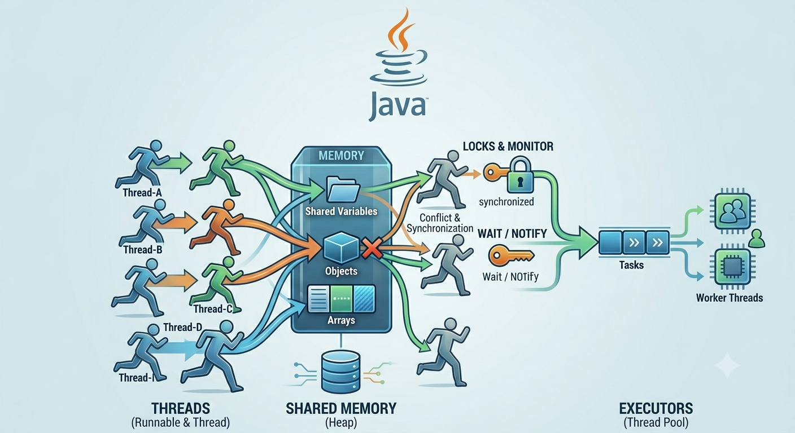
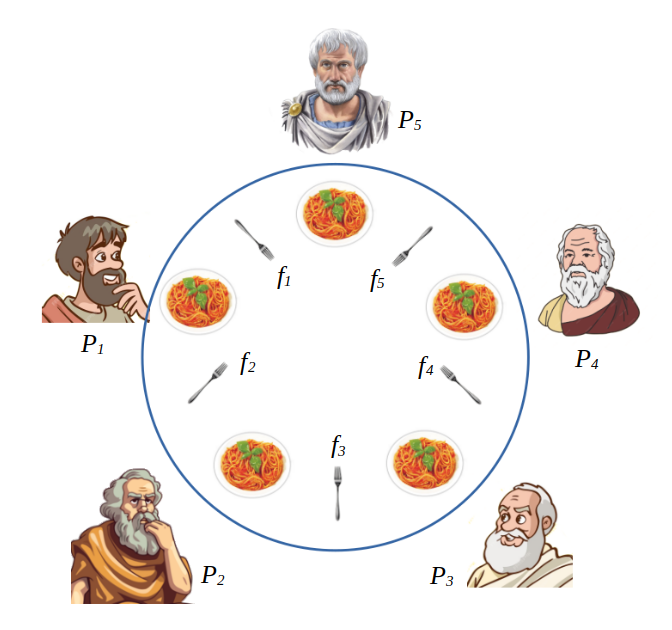
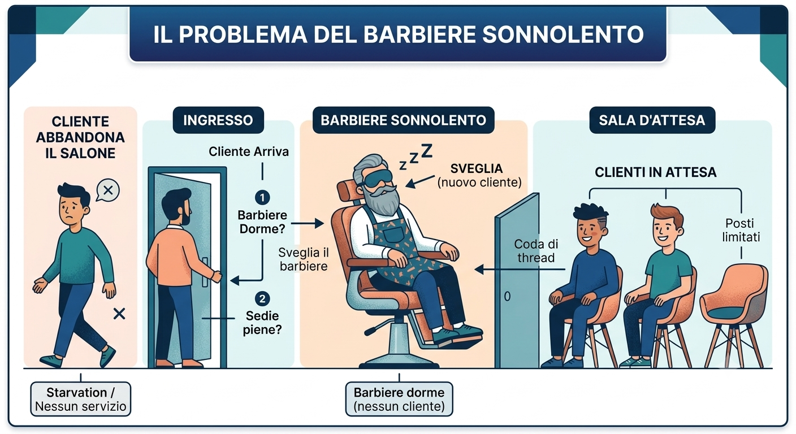

La Concorrenza in Java
In questa disciplina, abbiamo approfondito il concept di concorrenza, una tecnica fondamentale per sviluppare software moderni ed efficienti. Attraverso il linguaggio Java, abbiamo studiato come eseguire più attività simultaneamente all'interno dello stesso programma, ottimizzando l'uso delle risorse della CPU.
Il percorso ci ha permesso di comprendere la differenza tra processi e thread, imparando a gestirli sia tramite la classe Thread sia attraverso l'interfaccia Runnable, affrontando i problemi legati alla condivisione delle risorse. Tra le varie sfide affrontate in questo ambito, gli argomenti che ho trovato più stimolanti sono stati due classici problemi di concorrenza: il "Problema dei filosofi a cena" e il "Problema del barbiere sonnolento".

Rappresentazione dei Thread in Java

Il problema dei filosofi a cena
I Filosofi a Cena
Il "Problema dei filosofi a cena" (Dining Philosophers Problem) è un classico esperimento mentale della computer science ideato da Edsger Dijkstra nel 1965. Serve a illustrare i problemi di sincronizzazione e gestione delle risorse quando più thread competono per risorse limitate.
- Lo scenario: Cinque filosofi siedono attorno a un tavolo rotondo e alternano due sole attività: pensare e mangiare. Al centro c'è un piatto di spaghetti, ma per mangiare sono necessarie due bacchette (quella a destra e quella a sinistra di ciascun filosofo). Sul tavolo ci sono in tutto solo cinque bacchette.
- Il vincolo: Ogni filosofo può prendere una sola bacchetta alla volta e non può iniziare a mangiare finché non le ha ottenute entrambe.
- Il problema logico (Deadlock): Se tutti i filosofi si siedono contemporaneamente e afferrano la bacchetta alla propria sinistra, ognuno rimarrà con una sola bacchetta in mano. Tutti aspetteranno all'infinito che il vicino liberi l'altra bacchetta, portando l'intero sistema a un blocco totale e permanente.
Il Barbiere Sonnolento
Il "Problema del barbiere sonnolento" (Sleeping Barber Problem) è un altro classico scenario della computer science utilizzato per testare le capacità di sincronizzazione tra thread multipli in presenza di risorse e posti limitati.
- Lo scenario: In un salone c'è un solo barbiere, una sedia per il taglio e un numero fisso di sedie in sala d'attesa. Se non ci sono clienti, il barbiere si siede sulla sua poltrona e si addormenta.
- La dinamica dei clienti: Quando arriva un cliente, se il barbiere sta dormendo, lo sveglia per farsi tagliare i capelli. Se il barbiere sta già lavorando, il cliente si siede in sala d'attesa (se c'è posto). Se invece tutte le sedie sono occupate, il cliente abbandona il salone.
Questo problema mi ha aiutato a capire la comunicazione e il coordinamento tra thread (il barbiere e i clienti) utilizzando i metodi wait() e notify(). Rappresenta in modo brillante la gestione delle code d'attesa e la sincronizzazione basata sugli eventi: il barbiere dorme se non ci sono clienti, si sveglia quando ne arriva uno, e i clienti si mettono in attesa o se ne vanno se le sedie sono piene.

Rappresentazione del Barbiere Sonnolento
Risolvere questi scenari in Java mi ha fatto apprezzare l'importanza di progettare software non solo funzionanti, ma anche logicamente robusti, efficienti e privi di blocchi, dandomi una visione molto più pratica e concreta della programmazione concorrente.